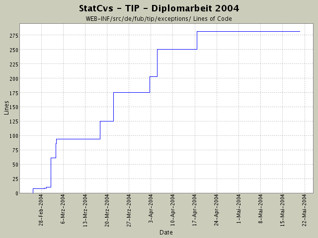

Summary Period: 2004-02-25 to 2004-05-20
[root]/WEB-INF/src/de/fub/tip/exceptions

Total Lines Of Code:
281 (2004-06-13 13:05)
| Author | Changes | Lines of Code | Lines per Change |
|---|---|---|---|
| hirsch | 21 (100.0%) | 322 (100.0%) | 15.3 |
Rechtschreibfehler beseitigt in Titelseite, die auch im Anhang ist
2 lines of code changed in:
alle Fabriken sind mit Coderümpfen ausgestattet.
Puh - was für eine Tipparbeit.
31 lines of code changed in:
lästiges DOC-Verzeichnis eingecheckt ....
1 lines of code changed in:
komplettes Dokumentieren der einzelnen Packages nach dem heute
rausgefundenen Schema von SUN -
juchhe!
Viel Tipparbeit - aber jetzt sieht das Javadoc-Resultat
wenigstens wie eine Anwendung aus.
Die neue statcvs-Version ist auch sehr gut!
48 lines of code changed in:
StandortPruefer: Eingeben eines Standortnamens angefange n..,..
27 lines of code changed in:
einige VO-Objekte mit Code gefüllt, muss nur
noch in den restlichen Code eingebunden werden
2 lines of code changed in:
Ausnahmebehandlung hinzugefügt,
Feld in SightVO für ID,
eventarea.jsp angepasst
application.properties-Werte geschrieben -
Logik in NachSehenswürdigkeitenPrüfer für
Standortabhängige Abfrage hinzugefügt.
50 lines of code changed in:
Javadoc fertiggemacht und bei Ausnahmen ein Packages wegreationalisiert
bzw. umgestaltet
48 lines of code changed in:
umgestellt auf besseres Design:
Actions geben nur dataSource-Komponente an
Pruefer (= BusinessObject), keine Connection mehr!
9 lines of code changed in:
Datenanzeige aller interessanten Koordinaten
25 lines of code changed in:
Namensstandard bei Ausnahmen eingehalten,
Koordinateneingabeprüfung in LoginAction eingebaut
61 lines of code changed in:
DB-Verbindung muss noch auf/abgebaut werden - daher die derzeitige NullPointerException
10 lines of code changed in:
DbKapselung ....
1 lines of code changed in:
erstes lokales COMMIT! Hoffentlich gibt es weniger Probleme als an der INF!
7 lines of code changed in:
Generated by StatCvs v0.2-dev